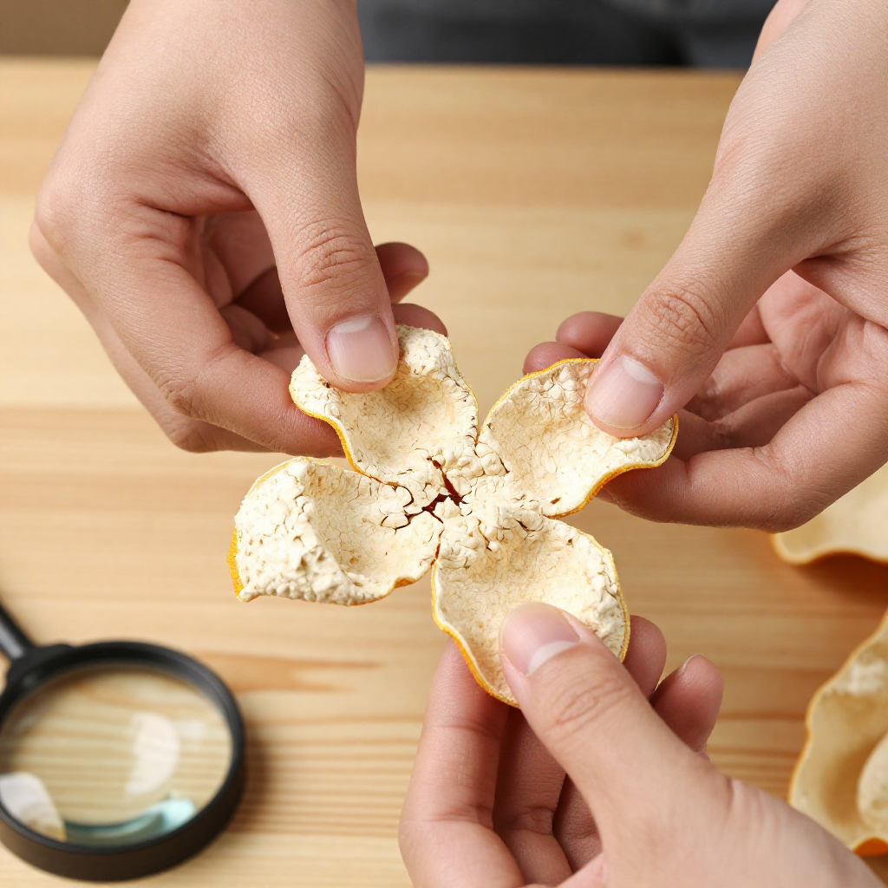
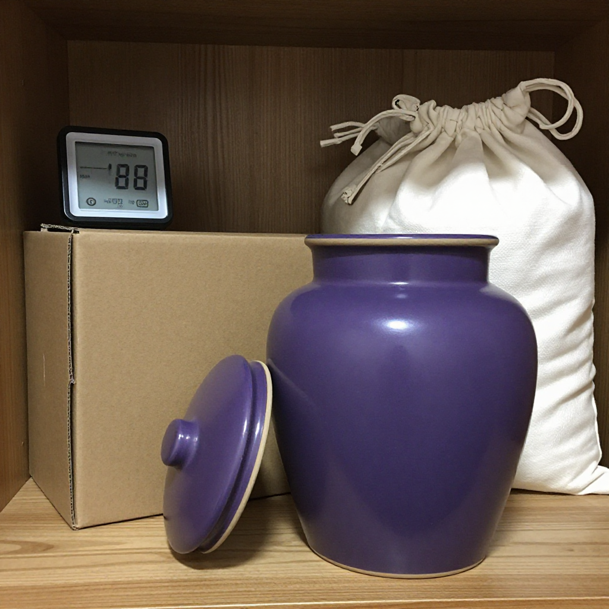

那年深秋，滢滢姐第一次踏進新會的陳皮村。空氣裡瀰漫着淡淡的柑橘清香，夾雜着歲月沉澱後的陳香。她站在一位老柑農的門廊下，看他小心翼翼地從紫砂罐裡取出一片陳皮——那片皮已被歲月浸潤成深棕紅色，表皮佈滿密密麻麻的油室，在午後陽光下泛着溫潤的光澤。
「呢片，係我自己存嘅。九三年嗰時，我家柑果豐收，嗰時邊識收藏，就係覺得皮扔咗可惜，留住可以用。結果一存就係三十年。」
他把陳皮遞過來，讓她湊近聞。一股複合型的香氣鑽進鼻腔——先是柑橘的清甜，然後是類似木質和藥草的醇厚，最後還有一絲甘甜的回韻。
「呢個叫分層香氣。新會陳皮嘅好，就喺呢啲層次裡。外地皮、假皮，做唔出呢個味。」
那時候她還不懂。直到後來自己也踏進這一行，才明白老人家說的每一個字都是真的。而今天的市場，比當年複雜得多。
一、2026年的市場：為什麼這麼亂
說到現在的市場，真的要嘆口氣。據廣東省政府門戶網站與南方日報報道，江門自2025年12月底啟動為期一年的新會陳皮地理標誌保護專項行動，針對的正是產地造假、年份虛標、以次充好、冒用地理標誌等突出問題，並明確近20個部門職責分工。近三年共出動執法人員6670人次，檢查相關經營主體17861家次，立案查處違法案件255宗，查扣涉案陳皮產品13.5萬斤，罰沒352.74萬元；江門還集中銷毀了涉案陳皮產品11噸。
為什麼這麼亂？因為陳皮這東西，年份越高越值錢。十年前的陳皮，假設當時一百元一斤，現在可能值一千、兩千，甚至更高。暴利驅動下，各種造假手段層出不窮。
「舊年我花大錢買咗一片『二十年新會陳皮』，你幫我睇下係咪真嘅？」
滢滢姐拿起來一看——明顯是外地皮染色做舊的。表皮顏色均勻得詭異，油室稀疏平淡；最關鍵是聞起來有一股刺鼻的酸味，不是自然陳化的陳香。
「二十年？你被人呃喇。真正嘅二十年老皮，顏色係漸變嘅，油室密到透光都睇得到。
這類故事每天都在上演。所以今天認真聊聊：如何在這個混亂的市場裡，找到一片真正的好陳皮。
二、行家教路：四步辨真假

這是跟多位新會老柑農學來的土方法，簡單實用，新手也能快速上手。
第一步：看。正宗新會陳皮，表面有自然紋理，不會完全均勻。隨着年份增長，顏色從淡黃漸漸轉為棕紅、暗棕，但絕不會通體烏黑發亮。那些看起來顏色過於均勻、表皮反光像打了蠟的，基本都有問題。內囊應該有自然的脫落痕跡，蓬鬆有彈性，而不是僵硬結塊。
第二步：聞。好的陳皮香氣是複合型的，年份越老越醇厚。三年左右的皮帶明顯的柑橘清香和輕微揮發油氣息；五到十年的皮香氣開始轉醇，有類似藥草和木質的感覺；十年以上的老皮則是陳香濃郁，帶甘甜的回韻。如果聞起來有酸味、霉味，或者香氣單薄刺鼻，就要小心。
第三步：折。用手輕輕彎折陳皮。正宗新會陳皮質地柔韌，不容易斷，彎折後會慢慢回彈；外地皮或者年份造假的皮，質地發脆，一折就斷，掉渣嚴重。
第四步：泡。取一小片用開水沖泡。正宗的陳皮茶湯呈金黃色，清澈透亮，入口先微苦後回甘，整個口腔都能感受到香氣在游走；假皮泡出來的茶湯渾濁，香氣很快消散，口感苦澀沒有回甘，有的甚至會有酸味或霉味。
這四步簡單吧？但真的管用。滢滢姐認識一位阿婆，就是靠這四步，在市場裡挑出了好幾片真正的老陳皮，從沒上過當。
三、為什麼三年是分水嶺
很多新手問：買陳皮到底要買幾年的？答案是：看用途，但三年是底線。
為什麼？因為新皮（一年左右）的燥烈之性還沒褪去，揮發油刺激性太強，內裡活性成分不穩定，喝多了容易上火。三年以上的陳皮，經過自然陳化，燥性慢慢褪去，藥性變得溫和醇厚，核心的橙皮苷、黃酮類、揮發油等成分開始穩定富集，養生效果才逐漸顯現。
如果只是日常保健，三到五年的陳皮足夠，性價比最高；用來調理脾胃、化痰止咳，五到十年效果更明顯；如果經濟條件允許，想追求更好的養生體驗，十年以上的老皮確實更勝一籌——但前提是你得確定買的是真貨。
至於那些號稱「二十年以上老皮」、價格卻低得離譜的，勸你別碰。真正的老皮，原料稀缺、存放成本高，哪有可能便宜賣？
四、存皮如存錢，方法不對全盤皆輸

說完選購，再說儲存。多少人花大價錢買了好陳皮，結果因為存放不當全毀了。最常見的錯誤是：密封保存。
很多人以為真空保存最安全，其實恰恰相反。陳皮需要呼吸，需要與空氣接觸才能繼續自然陳化。密封保存反而會讓陳皮受潮、發霉，滋生黃曲霉素，那可就全完了。
正確的做法很簡單：常溫乾燥、通風避光、自然透氣。用紙箱或者紫砂罐存放都行，關鍵是保持乾燥，偶爾翻動一下，讓陳皮均勻接觸空氣。潮濕的天氣要特別注意防潮，下雨天最好不要開窗。
「我把珍藏嘅十五年陳皮放喺紫砂罐，每年翻動兩次，三十年後攞出嚟仲係香氣撲鼻。秘訣就係——唔好折騰佢，畀佢自己慢慢變老。」
這話樸素，卻道出了陳皮保存的真諦。
五、我們的承諾
說了這麼多，其實就想告訴大家一件事：陳皮是好東西，但水深也是真的。想買到一片真正的新會陳皮，不能只聽故事，更要學會自己辨別。
行業也在往好的方向走。據報道，目前已有192家企業加入新會陳皮誠信聯盟，作出「新會種、新會種、新會陳」的質量承諾，全面接入溯源體系，並公開承諾「假一賠二十倍」；今年十月起，區、鎮、村三級幹部還會落田現場核定新會柑鮮果產量，數據一經申報不可更改。
下次去市場，記得帶上這四步：看、聞、折、泡。不確定的時候，多聞幾次，多泡一杯，好陳皮的香氣不會騙人。
常見問題
四步辨真假是哪四步？看——表面紋理自然、顏色漸變、內囊蓬鬆有彈性；聞——香氣複合有層次；折——質地柔韌、彎折回彈、不脆斷；泡——茶湯金黃清澈、先微苦後回甘。
為什麼說三年是分水嶺？新皮燥烈之性未褪、揮發油刺激性強；三年以上經自然陳化，燥性褪去、藥性溫和，橙皮苷與黃酮類等成分開始穩定富集，養生價值才逐漸顯現。
陳皮應該密封保存嗎？不建議。陳皮需要與空氣接觸才能繼續自然陳化，密封反而容易受潮發霉。正確做法是常溫乾燥、通風避光、自然透氣，用紙箱或紫砂罐存放，偶爾翻動。
怎麼避開「低價高年份」的陷阱？真正的老皮原料稀缺、倉儲成本高，不可能便宜。遇到標價明顯低於行情的「二十年老皮」，先看能不能提供溯源信息與批次檢測報告，再決定。
現在市場監管有多嚴？據廣東省政府門戶網站與南方日報報道，江門已構建「六位一體」保護體系並明確近20個部門職責分工；近三年檢查經營主體17861家次、立案255宗、罰沒352.74萬元，查扣涉案陳皮產品13.5萬斤，並集中銷毀11噸涉案產品。
新手第一次買，建議買幾年的？建議三到五年：價格適中、轉化特徵已顯現，適合練習辨識香氣與口感。預算允許再往上走，但務必認準溯源與檢測報告。
結語
十年陳皮一場夢——夢裡有人一夜暴富，也有人一年白忙。真正能讓人睡得安穩的，不是年份標得多高，而是那片皮從哪棵樹來、在什麼倉裡躺過多少年，掃一掃就知道。
想當面學一次看、聞、折、泡，來新會陳皮村南門牌坊G04找滢滢姐坐坐，店裡常年備着熱茶。想看不同年份的皮擺在一起怎麼比，看這篇《豐收節裡的新會陳皮村：霞姐、滢滢和一張守護了十三年的信任》；想了解今年產區的政策與數字化進展，翻翻這篇《陳皮熱點日報：新會產區政策密集發布，產業數字化提速》。
下期預告：滢滢姐會帶着這四步走一趟市場，隨機挑三家攤位的陳皮當場試——看誰的皮經得起對光、經得起泡，全程不剪接，現場見真章。